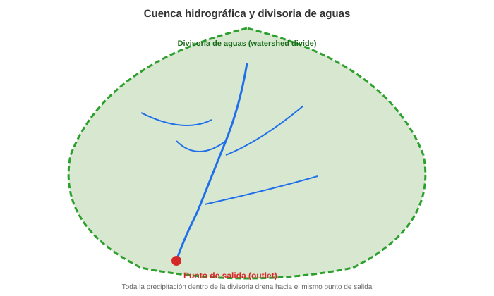
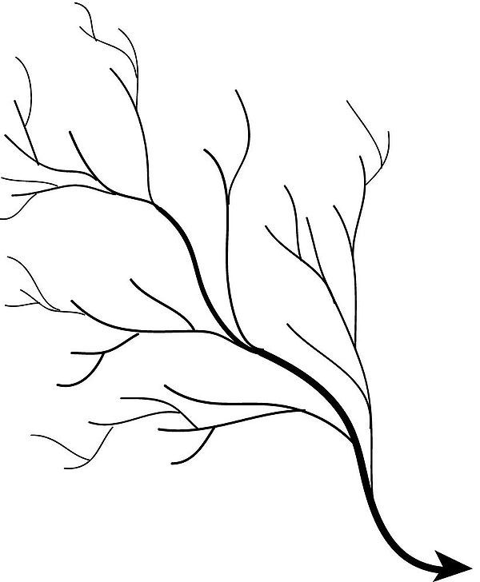
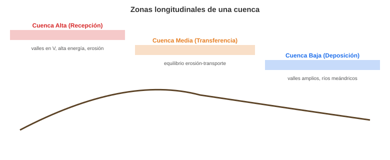
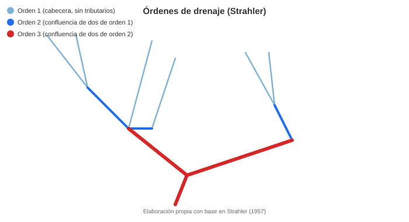
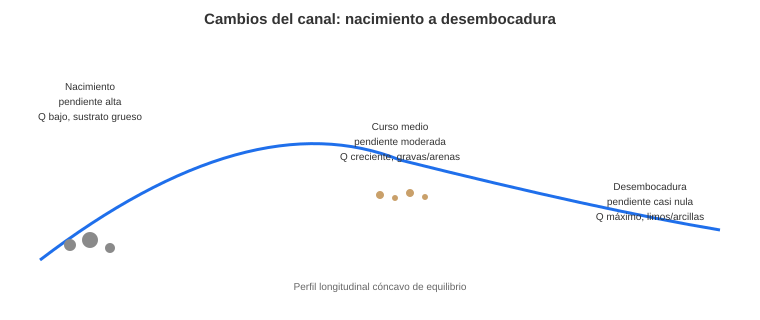
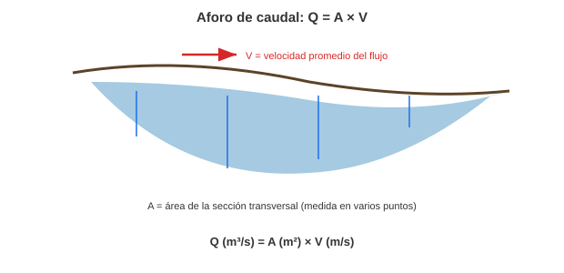
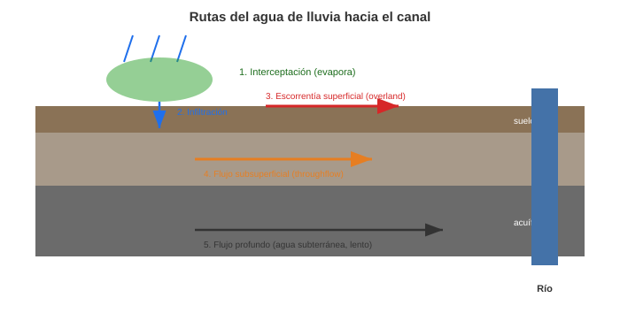
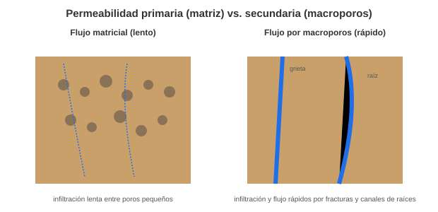
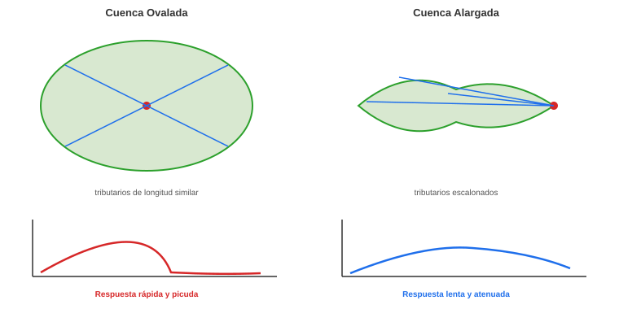
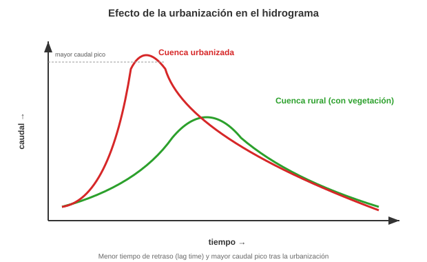

Geomorfología de Cuencas Hidrográficas#
Este documento explora la cuenca hidrográfica como la unidad fundamental del paisaje, analizando su estructura, los procesos hidrológicos que la gobiernan y cómo su morfología controla la respuesta en caudales.
Important
Objetivos de aprendizaje:
Definir la cuenca hidrográfica y sus divisorias de aguas como la unidad de gestión del territorio.
Jerarquizar la red de drenaje mediante el método de Strahler.
Diferenciar los procesos de erosión, transporte y deposición en las diferentes partes de la cuenca.
Analizar el impacto de la urbanización en la respuesta hidrológica (hidrogramas) y el riesgo de inundación.
1. ¿Qué es una Cuenca Hidrográfica?#
Una cuenca hidrográfica es la unidad geomorfológica fundamental. Se define como la superficie total de terreno que drena el agua de la precipitación hacia un punto común de salida (llamado outlet), que puede ser un río, un lago o el mar. El límite de la cuenca está definido por la divisoria de aguas (o watershed divide), una línea imaginaria que sigue las cimas y crestas topográficas y separa los flujos de agua que van en direcciones opuestas.
{kind=link}

Fig. 99 Una cuenca hidrográfica está delimitada por su divisoria de aguas y drena hacia un único punto de salida. Elaboración propia.#
{kind=link}

Fig. 100 Patrón de drenaje dendrítico, típico de sustratos homogéneos con pendiente moderada. Wikimedia Commons (CC BY-SA 4.0).#
{kind=link}
2. Partes de una Cuenca#
Una cuenca se zonifica longitudinalmente en tres partes, cada una dominada por diferentes procesos:
Cuenca Alta (Recepción): Es la cabecera.
Características: Pendientes fuertes, valles en “V” estrechos.
Procesos: Alta energía. Domina la erosión y los movimientos en masa. Producción de sedimentos.
Cuenca Media (Transferencia):
Características: Pendientes moderadas, el valle se ensancha.
Procesos: Equilibrio entre erosión y deposición. Domina el transporte de sedimentos. Aparecen las primeras llanuras de inundación.
Cuenca Baja (Deposición):
Características: Pendientes muy bajas, valles amplios, ríos meándricos, llanuras de inundación extensas.
Procesos: Baja energía. Domina la deposición de sedimentos. Formación de deltas en la desembocadura.
{kind=link}

Fig. 101 Zonas longitudinales de una cuenca: alta (recepción), media (transferencia) y baja (deposición). Elaboración propia.#
3. Órdenes de Drenaje (Strahler)#
Es un método para clasificar la jerarquía de la red de drenaje, lo cual es un indicador de la complejidad y el tamaño de la cuenca. El método más común es el de Strahler [1957]:
Orden 1: Canales de cabecera que no tienen ningún tributario.
Orden 2: Se forman por la confluencia de dos canales de Orden 1.
Orden 3: Se forman por la confluencia de dos canales de Orden 2.
Nota: Si un canal de orden menor (ej. Orden 1) se une a uno de orden mayor (ej. Orden 2), el canal resultante mantiene el orden mayor (Orden 2).
El orden de la cuenca se define por el orden del río en su desembocadura.
{kind=link}

Fig. 102 Jerarquización de la red de drenaje según el método de Strahler. Elaboración propia con base en Strahler [1957].#
4. Cambios del Canal (Nacimiento a Desembocadura)#
A medida que el río avanza por las partes de la cuenca, sus características cambian de forma predecible, formando el perfil longitudinal (un perfil cóncavo de equilibrio):
Nacimiento (Orden 1): Pendiente muy alta, descarga (caudal) baja, sustrato grueso (bloques, cantos), canal estrecho.
Curso Medio: Pendiente moderada, descarga creciente (por unión de tributarios), sustrato de gravas y arenas.
Desembocadura (Orden alto): Pendiente casi nula, descarga máxima, sustrato fino (limos, arcillas), canal ancho y profundo.
{kind=link}

Fig. 103 Cambios en pendiente, caudal y tamaño de sedimento a lo largo del perfil longitudinal del río. Elaboración propia.#
5. Respuesta de la Cuenca y Medición de Caudal#
Caudal Sólido y Líquido#
Caudal Líquido (\(Q\)): Es el volumen de agua que pasa por una sección transversal del río por unidad de tiempo. Se mide en \(m^3/s\).
Caudal Sólido (\(Q_s\)): Es la cantidad (masa o volumen) de sedimento que transporta el río por unidad de tiempo.
Medición de Caudal (Aforo)#
El aforo es la medición del caudal. Se realiza en una sección del canal. La fórmula básica es:
Donde:
\(Q\): Caudal (\(m^3/s\))
\(A\): Área de la sección transversal (\(m^2\)). Se calcula midiendo la profundidad en varios puntos a lo ancho del canal.
\(V\): Velocidad promedio del flujo (\(m/s\)). Se mide con instrumentos como un correntómetro o molinete.
{kind=link}

Fig. 104 Medición del caudal (aforo) mediante el producto del área de la sección transversal y la velocidad del flujo. Elaboración propia.#
6. Significado de la Respuesta de la Cuenca#
La respuesta de una cuenca es la forma en que transforma una entrada de precipitación (lluvia) en una salida de caudal (el hidrograma).
Cuando llueve, el agua sigue varias rutas antes de llegar al canal:
Interceptación: El agua es capturada por la vegetación y se evapora (nunca toca el suelo).
Infiltración: El agua penetra en el suelo.
Escorrentía Superficial (Flujo Overland): Si la lluvia es más intensa que la capacidad de infiltración, el agua fluye sobre la superficie.
Flujo Subsuperficial (Throughflow): El agua se mueve lateralmente dentro del suelo.
Flujo Profundo (Agua Subterránea): El agua percola profundamente, recarga el acuífero y se mueve muy lentamente hacia el río.
{kind=link}

Fig. 105 Rutas del agua de lluvia hacia el canal: interceptación, infiltración, escorrentía superficial, flujo subsuperficial y flujo profundo. Elaboración propia.#
7. Respuesta Lenta vs. Respuesta Rápida#
El hidrograma (gráfico de caudal vs. tiempo) muestra dos componentes:
Respuesta Rápida (Flujo Pico):
Definición: El aumento rápido del caudal durante e inmediatamente después de una tormenta.
Flujo Dominante: Principalmente la escorrentía superficial. También incluye el flujo subsuperficial rápido.
Causa: La precipitación supera la capacidad de infiltración. Genera crecidas súbitas.
Respuesta Lenta (Flujo Base):
Definición: El caudal sostenido del río que existe antes y mucho después de la tormenta.
Flujo Dominante: Flujo profundo (agua subterránea).
Causa: Liberación lenta y constante del agua almacenada en los acuíferos.
8. Variables que Afectan la Respuesta de la Cuenca#
Geología: Rocas permeables (calizas, areniscas) fomentan la infiltración y una respuesta lenta. Rocas impermeables (granitos, arcillolitas) fomentan la escorrentía y una respuesta rápida.
Suelos: Suelos gruesos y profundos = respuesta lenta. Suelos delgados o arcillosos = respuesta rápida.
Cobertura Vegetal: Los bosques interceptan la lluvia, protegen el suelo y sus raíces facilitan la infiltración. Una alta cobertura vegetal genera una respuesta lenta.
Pendiente: Pendientes fuertes = respuesta rápida.
9. Agua en el Suelo y Permeabilidad Secundaria#
Agua Higroscópica: Agua adherida fuertemente a las partículas del suelo; no disponible para las plantas.
Punto de Marchitez Permanente (PMP): Nivel de humedad donde solo queda agua higroscópica.
Agua Capilar: Agua retenida en los microporos por tensión superficial. Es el agua disponible para las plantas.
Capacidad de Campo (CC): Humedad que queda en el suelo después de que el agua gravitacional ha drenado.
Agua Gravitacional: Agua en los macroporos que drena por gravedad. Esta es el agua que se convierte en flujo subsuperficial y profundo.
Permeabilidad Secundaria: Se refiere a la infiltración y flujo que no ocurre a través de los poros del suelo (matriz), sino a través de macroporos (fracturas, grietas de desecación, canales de raíces, madrigueras). Esta permeabilidad tiene un efecto dual: permite que el agua se infiltre rápidamente (reduciendo la escorrentía superficial) pero también le permite moverse rápidamente como flujo subsuperficial, contribuyendo a la respuesta rápida del hidrograma.
{kind=link}

Fig. 106 Flujo a través de la matriz del suelo (lento) frente a flujo por macroporos: fracturas y canales de raíces (rápido). Elaboración propia.#
10. Forma de la Cuenca y su Respuesta#
Cuenca Ovalada (o Redondeada): Los tributarios tienen longitudes similares. El agua de todas las partes de la cuenca llega al punto de salida casi al mismo tiempo.
Respuesta: Muy rápida y picuda. Alto riesgo de crecidas.
Cuenca Alargada: Los tributarios están escalonados. El agua de las cabeceras tarda mucho más en llegar a la salida que el agua de la parte baja.
Respuesta: Más lenta y atenuada (el pico es más bajo y se extiende por más tiempo).
{kind=link}

Fig. 107 Forma de la cuenca (ovalada vs. alargada) y su efecto en la forma del hidrograma. Elaboración propia.#
11. Efecto de la Urbanización en la Respuesta#
La urbanización (impermeabilización de suelos con concreto y asfalto) altera drásticamente la hidrología.
Reduce la Infiltración: Casi a cero en áreas pavimentadas.
Reduce la Interceptación: Se elimina la cobertura vegetal.
Aumenta la Escorrentía: Todo lo que no se infiltra, se convierte en escorrentía superficial.
Resultado en el Hidrograma:
La respuesta es extremadamente rápida.
El caudal pico es mucho mayor (más volumen de agua en menos tiempo).
El flujo base desaparece (no hay recarga de acuíferos).
Efecto en los Periodos de Retorno: La urbanización aumenta la magnitud del caudal pico para un mismo periodo de retorno. Por ejemplo, una tormenta que antes (sin urbanizar) causaba una inundación con periodo de retorno de 10 años, ahora (urbanizada) puede causar un caudal pico que antes solo se veía cada 50 o 100 años. El sistema se vuelve mucho más propenso a inundaciones frecuentes y severas.
{kind=link}

Fig. 108 Efecto de la urbanización sobre el hidrograma: menor tiempo de retraso y mayor caudal pico. Elaboración propia.#
Cuencas Hidrográficas en Colombia#
Colombia cuenta con cinco grandes regiones hidrográficas (Amazonas, Orinoco, Caribe, Pacífico y Catatumbo).
Cuenca del Magdalena-Cauca: Es la más importante desde el punto de vista socioeconómico, drenando el 24% del territorio nacional. Es una cuenca de gran complejidad tectónica y climática.
Cuencas del Pacífico: Caracterizadas por longitudes cortas, pendientes extremas y una de las pluviosidades más altas del mundo (ej. cuenca del río Atrato), lo que genera caudales específicos altísimos y gran transporte de sedimentos.
Gestión de Cuencas: En Colombia, las POMCA (Planes de Ordenación y Manejo de Cuencas Hidrográficas) son el instrumento legal para la gestión del riesgo y el recurso hídrico.
Taller de Autoevaluación#
Órdenes de Drenaje: Dado un mapa de una red de drenaje, identifique los canales de orden 1, 2 y 3 según Strahler. ¿De qué orden es la cuenca si su río principal es de orden 4?
Respuesta Hidrológica: Explique por qué una cuenca ovalada tiende a producir crecidas más peligrosas que una cuenca alargada.
Urbanización: ¿Cómo afecta la pavimentación de una cuenca al tiempo de retraso (lag time) entre la tormenta y el pico del hidrograma?
Perfil Longitudinal: Describa cómo cambia el sustrato del lecho desde la cuenca alta hasta la desembocadura. ¿Por qué ocurre este cambio?
Balance Hidráulico: Si un río tiene un área de sección de 50 m² y una velocidad de 2 m/s, ¿cuál es su caudal? Si aguas abajo el área aumenta a 100 m² y no hay tributarios, ¿cuál será la nueva velocidad promedio?